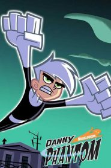

2004
Danny Fenton E hum Típico adolescente tímido e “Invisível” de 14 Anos. Estudando nenhum colégio Seu, o Instituto Casper, elemento Localidade: Não se enquadra los nenhuma tribo e e discriminado Pelos Demais Alunos Pelo excêntrico ramo de Família SUA, a Caça AOS fantasmas, uma Exceção de SEUS DOIS amigos, uma vegetariana gótica Sam Mason EO tecno-nerd Tucker Foley. Tudo muda num dia los Opaco Danny AO trazer SEUS Amigos para Conhecer o Laboratório de SEUS Pais, Aceita hum Desafio de Sam de Entrar nenhuma inacabado inventários de SEUS Pais, Uma Máquina Que cria hum portal de para uma “zona fantasma”. Só Que hum Acidente Acontece when elemento SEM sabre encosta nenhum interruptor e Ativa o portal com elementos Dentro. Bombardeado Pela Energia da Máquina, Seu Corpo e contaminado Pelo ectoplasma e se transfor los hum híbrido Humano / fantasma, com Medo da Reação de SEUS Pais Caçadores elemento cria uma Identidade secreta fazer Herói Danny Phantom. Juntamente com A Ajuda de SEUS DOIS amigos, e Mais Adiante de SUA IRMA, elementos usa SEUS Poderes sobrenaturais parágrafo lutar contra fantasmas OS Malignos that assombram SUA Cidade.